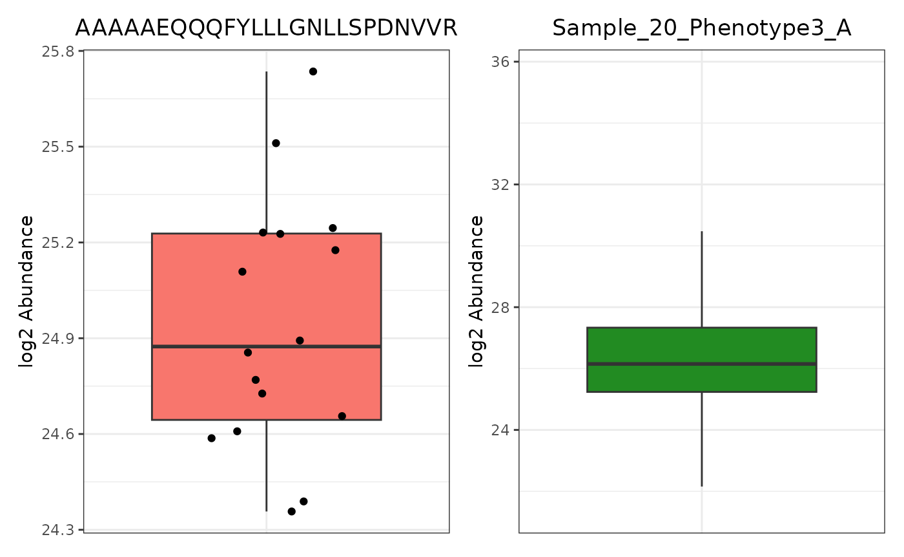
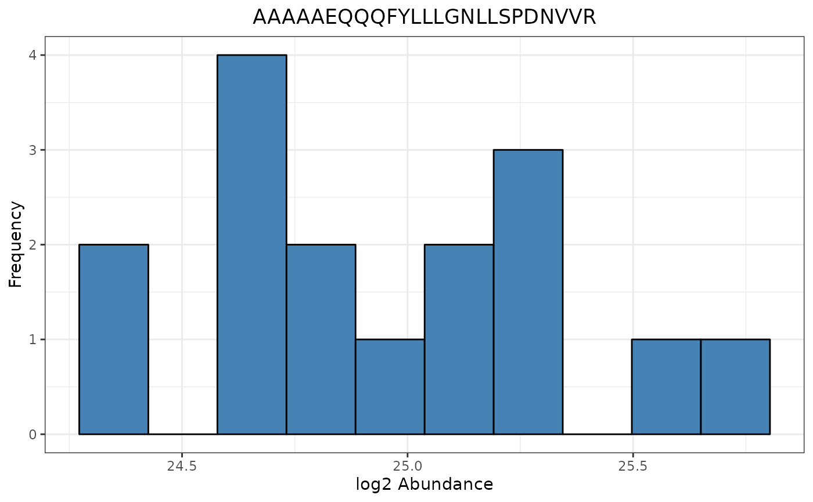
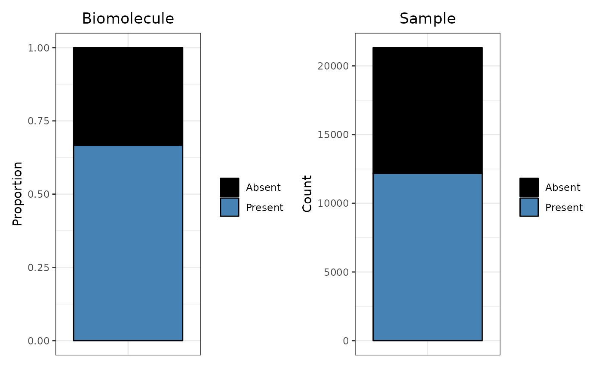
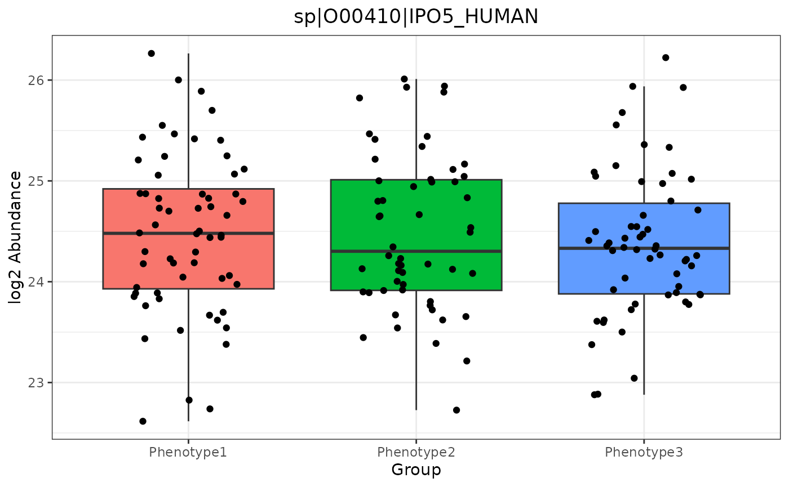
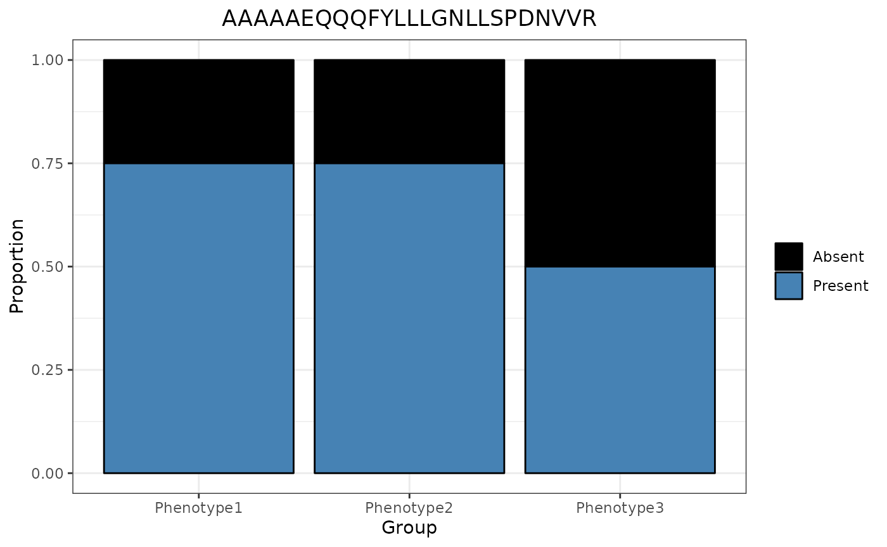
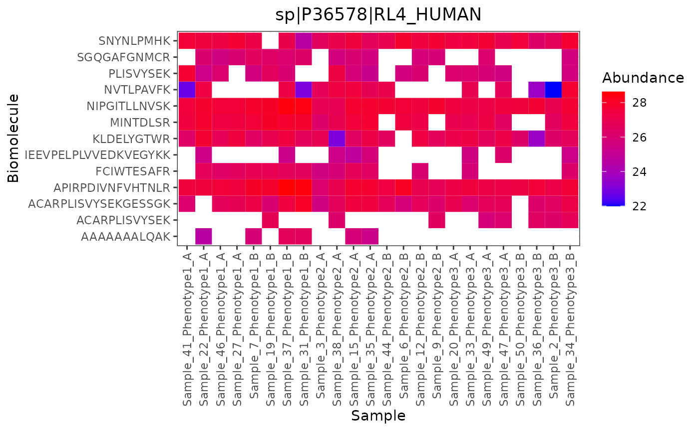
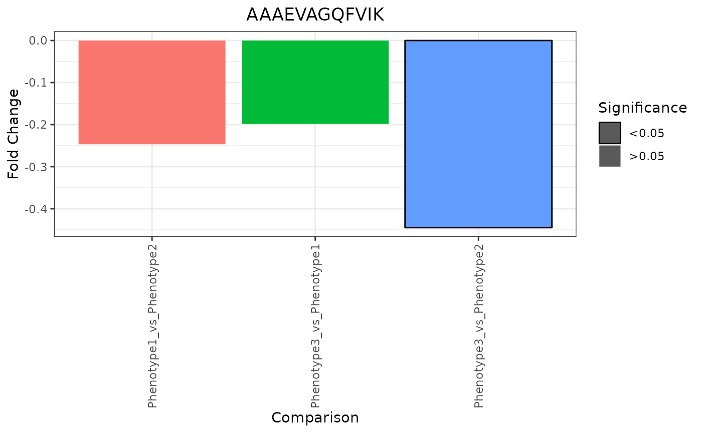
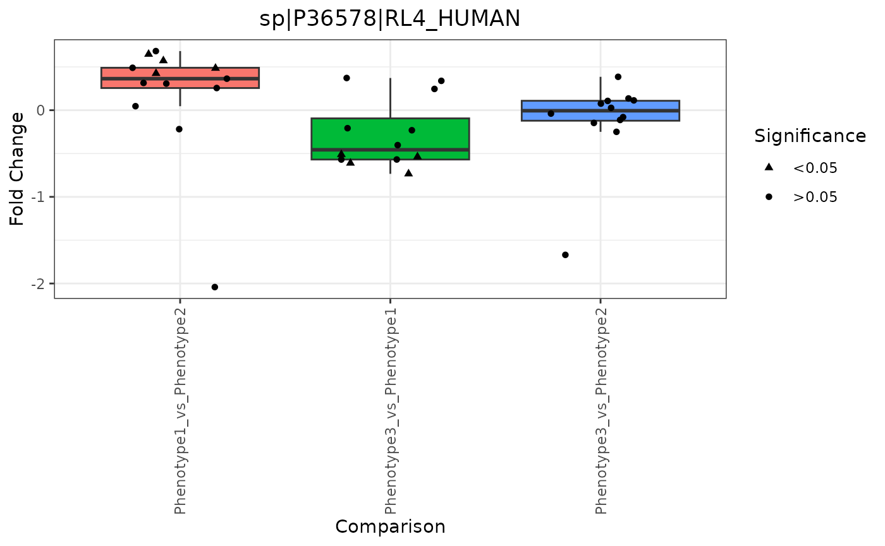
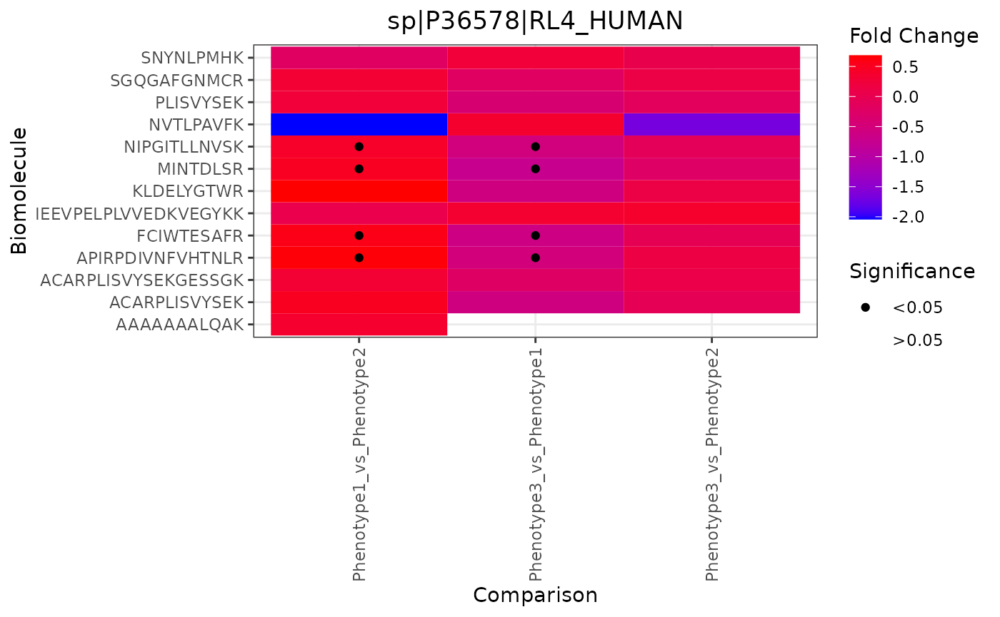
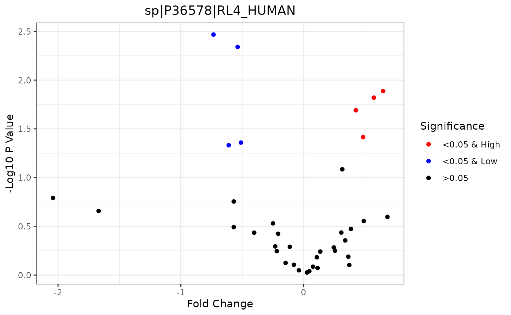

Using Trelliscope Functions with pmartR
David Degnan, Kelly Stratton, Lisa Bramer
2022-10-13
Source:vignettes/Trelliscope_Vignette.Rmd
Trelliscope_Vignette.RmdIntroduction
A challenge of ’omics data is seeing trends on the biomolecule, sample, and biomolecule class (i.e. peptide fragments from a protein) level due to the large number of individual plots to visualize. Trelliscope is an HTML tool which allows users to search, sort, and filter plots based on cognostics, which include single data descriptors of the data like the mean, standard deviation, p-value, etc.
The general workflow for the trelliscope builder functions in pmartR are as follows:
- build the trelliscope data object with an e_data file, omicsData object0, statRes object, or both an omicsData and statRes object. (
as.trelliData.edataoras.trelliData)
Note: The e_data file is an unprocessed expression matrix. The omicData object is a pepData, proData, lipidData, etc., object that has completed normalization if required. The statRes object contains the statistics results following an imd-ANOVA.
select the variable to panel the data by (
trelli_panel_by)and finally, pass to the corresponding trelliscope building functions
Currently, abundance, missingness, and fold change plots are supported, and can be summarized as follows:
| Input.Data | Plot.Type | Uses.e_data | Uses.omicsData | Uses.statRes | Requires.Biomolecule.Class..e_meta. | Main.Effects.Used |
|---|---|---|---|---|---|---|
| Abundance | Boxplot | X | X | X | ||
| Abundance | Histogram | X | X | |||
| Abundance | Heatmap | X | X | X | ||
| Missingness | Barplot | X | X | X | X | |
| Fold Change | Barplot | X | X | |||
| Fold Change | Boxplot | X | X | X | ||
| Fold Change | Volcano | X | X | |||
| Fold Change | Heatmap | X | X |
where “Input Data” is the type of data that will be plotted and “Plot Type” describes what kind of plot would be generated in the trelliscope. “Uses e_data” describes plots that can be made with just an e_data object using the as.trelliData.edata function. Similarly, “Uses omicsData” describes plots that can be made with an omicsData object (pepData, proData, lipidData, nmrData, etc.) in the as.trelliData function. “Uses statRes” describes plots that can be built with a statRes object in as.trelliData; however, most of these plots “Require e_meta” from omicsData to determine trelliscope panels. The last column, “Main Effects used” describes any plot where the “main_effects” parameter in pmartR::group_designation plot was set.
Example Case 1: e_data Only
Let’s start with the simplest input data to run these trelliscope functions, e_data. For context, a typical e_data file looks like this:
| LipidCommonName | Mock1 | Mock2 | Mock3 | Infection1 | Infection2 | Infection3 | Infection4 | Infection6 | Infection7 | Infection8 | Infection9 |
|---|---|---|---|---|---|---|---|---|---|---|---|
| Cer(d18:0/16:0) | 307384.88 | 388635.22 | 332032.95 | 775978.9 | 960886.0 | 697505.46 | 564257.8 | NA | 466349.01 | 56384.40 | 429000.30 |
| Cer(d18:0/22:0) | NA | NA | NA | NA | 293545.6 | 75020.31 | 156391.1 | 85233.24 | 44918.62 | NA | 66104.86 |
| Cer(d18:0/24:0) | 59442.36 | 73989.48 | 45173.44 | 274673.0 | 150737.3 | 419250.96 | 121000.2 | 93570.35 | 82387.91 | 36936.53 | 28011.50 |
| Cer(d18:0/24:1) | 43464.48 | 31148.65 | 130995.66 | 432901.0 | 927511.4 | 528311.11 | 518819.3 | 300644.47 | 195772.16 | 13031.36 | 384786.88 |
| Cer(d18:1/24:1) | 30349.88 | 33225.59 | 61498.13 | 270888.0 | 448486.3 | NA | 319427.7 | 131777.53 | NA | NA | NA |
| CerH2O(d18:1/16:0) | NA | NA | NA | 399576.3 | 171359.5 | 465004.79 | 512264.4 | 356657.96 | 216712.81 | NA | 486943.97 |
where each of the rows are biomolecules and each of the columns are samples. Within each e_data file, there must be one identifier column referred to as the “edata_cname.” The rest of the columns contain samples. With the exception of isobaric peptide data and nmr data, all data types must be log transformed and normalized. After setting the e_data and edata_cname parameters in the as.trelliData.edata function, the next step is to set the omics_type which are all currently supported pmartR omics types. Set a transformation by first reporting the original data scale in the data_scale_original and the desired scale in data_scale. “log2”, “log10”, “log”, and “abundance” (no transformation) are currently supported.
To understand the array of normalization functions and parameters, see ?normalize_global, ?normalize_loess and ?normalize_quantile. Below, we have an example of valid log transformation and normalization parameters.
trelliData1 <- as.trelliData.edata(
e_data = pmartRdata::lipid_edata_pos,
edata_cname = "LipidCommonName",
omics_type = "lipidData",
data_scale_original = "abundance",
data_scale = "log2",
normalization_fun = "global",
normalization_params = list(subset_fn = "all", norm_fn = "median", apply_norm = TRUE,
backtransform = TRUE)
)After creating a trelliData object, the next step is to determine which variable to panel the data by. The ?summary function provides a quick overview of potential plots that can be made.
summary(trelliData1) ## Panel By Choice Plot Number of Plots
## 1: LipidCommonName abundance boxplot 146
## 2: LipidCommonName abundance histogram 146
## 3: LipidCommonName missingness bar 146
## 4: Sample abundance boxplot 11
## 5: Sample missingness bar 11With only an e_data file, there are only two potential options for panel by variables, which include the edata_cname (in this case, “LipidCommonName”), and a “Sample” category which is comprised of the name of every column besides edata_cname. The plot, which corresponds to the table in the introduction, can be further investigated with adding trelli and underscores to the name. For example, the “abundance boxplot” details be viewed with ?trelli_abundance_boxplot. The last column tells you the number of plots that can be made with that trelliscope function. Note that trelliscopes of more than 1,000 plots can take several minutes to be made.
To set the panels for the trelliscope, use the ?trelli_panel_by function. We only have two options in this case, so a summary for plots where each panel is the biomolecule (edata_cname = “Lipid”) looks like this:
summary(trelliData1 %>% trelli_panel_by("LipidCommonName")) ## Panel By Choice Plot Number of Plots
## 1: LipidCommonName abundance boxplot 146
## 2: LipidCommonName abundance histogram 146
## 3: LipidCommonName missingness bar 146which is the above table subsetted down to the only options available to plot right now. The typical trelliscope parameters look like this:
| Parameter.Name | Description |
|---|---|
| cognostics | Set the specific cognostics of the trelliscope. Varies per plotting function. |
| ggplot_params | Pass parameters to the ggplot functions as a list of strings |
| interactive | Indicate whether plots should be interactive or not |
| path | The path where the trelliscope will be outputted to |
| name | Name of the trelliscope display |
| test_mode | Indicate whether the trelliscope should be subsetted to a few panels or not |
| test_example | The panels to subset the trelliscope to if test_mode is true |
| single_plot | Output a single plot instead of a trelliscope display |
See an example of how to use one of these functions below, with test_mode enabled.
trelli_abundance_boxplot(
trelli_panel_by(trelliData1, "LipidCommonName"),
cognostics = c("n", "mean", "median", "sd"),
interactive = TRUE,
include_points = TRUE,
name = "Trelliscope",
test_mode = TRUE,
test_example = 3
)Also, see “How Do I Change ggplot Parameters?” below to understand how to change axis and title labels, sizes, and angles, as well as change plot colors, etc. All plotting commands follow the ggplot2 library of functions. To see what each trelliscope looks like, start by investigating the default plot option with single_plot = TRUE and selecting a specific plot with test_example.
Abundance Boxplot
Let’s first create two panel_by trelliscope objects, one by “Lipid”, and the other by “Sample”. If we were to plot the first sample’s boxplot abundance with include_points = TRUE, we would get too many points to view. Thus, set include_points to FALSE. Since we’ve set “single_plot” to TRUE, we get an example of one of the many plots that will be made and passed to trelliscope. We can change which plot we’re looking at with “test_example”. On the left, we have a “LipidCommonName” example and on the right, a “Sample” example, with the color changed to avoid confusion.
# Panel by Mass Tag ID
MassGroups <- trelli_panel_by(trelliData1, "LipidCommonName")
# Panel by Sample
SampleGroups <- trelliData1 %>% trelli_panel_by("Sample")
# Create an example boxplot
Abun_Box_Edata <- trelli_abundance_boxplot(MassGroups, single_plot = TRUE, test_example = 3)
# Make an abundance boxplot without the points
Abun_Box_Sample <- trelli_abundance_boxplot(SampleGroups, include_points = F, single_plot = T,
ggplot_params = "scale_fill_manual(values = 'forestgreen')")
# Use patchwork to put plots together
Abun_Box_Edata + Abun_Box_Sample
Abundance Histogram
The abundance histogram is only supported for data that has been paneled by edata_cname.
trelli_abundance_histogram(MassGroups, single_plot = TRUE, test_example = 3)
Missingness Barplot
We can also build a missingness bar plots. In this data, there is no missingness, so we will use a different dataset to better demonstrate how these plots look. If we would rather see count information in the bar plot instead of proportions, we can easily set proportion to FALSE.
# Pull from the smoking dataset
smoke_trelliData <- as.trelliData.edata(
e_data = pmartRdata::smoke_edata,
edata_cname = "Mass_Tag_ID",
omics_type = "pepData"
)
# Create an example bar plot
Miss_Bar_Edata <- trelli_missingness_bar(trelli_panel_by(smoke_trelliData, "Mass_Tag_ID"),
single_plot = TRUE, test_example = 3,
ggplot_params = "ggtitle('Biomolecule')")
# Make a missingness barplot
Miss_Bar_Sample <- trelli_missingness_bar(trelli_panel_by(smoke_trelliData, "Sample"),
include_points = F,
proportion = FALSE, single_plot = T,
ggplot_params = "ggtitle('Sample')")
# Put plots together with patchwork
Miss_Bar_Edata + Miss_Bar_Sample
These are all the currently supported plots for only e_data files. There are more options for omicsData and statRes listed below.
Example Case 2: omicsData Only
An omicsData object that is log transformed and normalized (with the exception of isobaric and nmr data) can be passed to the as.trelliData function which requires either an omicsData or statRes object.
# Extract and add lipid family information
lipid_emeta <- data.frame("LipidCommonName" = lipid_edata_pos$LipidCommonName,
"LipidFamily" = lipid_edata_pos$LipidCommonName %>% as.character() %>%
strsplit("(", fixed = T) %>% lapply(function(el) {el[1]}) %>% unlist())
# Extend fdata to have two infection groups
lipid_fdata_pos2 <- data.frame("Sample_Name" = lipid_fdata_pos$Sample_Name,
"Condition" = c(rep("Mock", 3), rep("Infection_A", 4), rep("Infection_B", 4)),
"Weight" = runif(11))
# Build lipid data object
lipids <- as.lipidData(e_data = lipid_edata_pos, f_data = lipid_fdata_pos2, e_meta = lipid_emeta,
edata_cname = "LipidCommonName", fdata_cname = "Sample_Name",
emeta_cname = "LipidCommonName")
# Log transform the edata file
lipids <- edata_transform(omicsData = lipids, data_scale = "log2")
# Set the group designation main effects
lipids <- group_designation(omicsData = lipids, main_effects = c("Condition"))
# Filter the data to run the imd_anova
imdanova_Filt <- imdanova_filter(omicsData = lipids)
lipids <- applyFilt(filter_object = imdanova_Filt, omicsData = lipids, min_nonmiss_anova=2)
# Normalize the data. You may use the Kruskal-Wallis test from normRes_tests to
# confirm that your normalization choice does not induce nor remove significance.
lipids <- normalize_global(lipids, subset_fn = "rip", norm_fn = "median",
apply_norm = TRUE, backtransform = TRUE)
# Create trelliData object
trelliData2 <- as.trelliData(omicsData = lipids)If we summarize the plot options with summary, we get:
summary(trelliData2)## Panel By Choice Plot Number of Plots
## 1: LipidCommonName abundance boxplot 66
## 2: LipidCommonName abundance histogram 66
## 3: LipidCommonName missingness bar 66
## 4: Sample_Name abundance boxplot 11
## 5: Sample_Name missingness bar 11
## 6: LipidFamily abundance boxplot 9
## 7: LipidFamily abundance heatmap 9
## 8: LipidFamily missingness bar 9Since we included an e_meta object that has categorical data for e_data, there are a lot more plotting options available then what was provided for the e_data file. Additionally, we have provided grouping information with the “group_designation” function which will be incorporated into some of the plotting functions. Since we’ve already covered the trelliscope building functions, we will focus these next few sections on how each e_meta and group_designation affect each plot.
Abundance Boxplot
The group_designation variables are utilized in the abundance boxplot when paneling by edata_cname (“LipidCommonName”)…
trelliData2 %>%
trelli_panel_by("LipidCommonName") %>%
trelli_abundance_boxplot(test_example = 3, single_plot = T, ggplot_params = "xlab('Viral Strain')")
…or e_meta variable. In this case, our options include LipidFamily. Note that group_designation is used if included:
trelliData2 %>%
trelli_panel_by("LipidFamily") %>%
trelli_abundance_boxplot(test_example = 6, single_plot = T)
If we panel by the sample, the plot remains the same as in example case 1.
Abundance Histogram
Since group_designation is not used in the histogram trelliscope plotting function, it remains the same as in Example Case 1.
Missingness Bar
Once again, group_designation data is used if included, even if the panel_by variable is an e_meta variable.
trelliData2 %>%
trelli_panel_by("LipidFamily") %>%
trelli_missingness_bar(test_example = 3, single_plot = T)
Abundance Heatmap
An advantage to including e_meta variables is the ability to use heatmaps, where each panel is an “e_meta” variable, one axis is the biomolecules within that biomolecule class, and the other axis is the samples in order by the “group_by” designation.
trelliData2 %>%
trelli_panel_by("LipidFamily") %>%
trelli_abundance_heatmap(test_example = 2, single_plot = T, ggplot_params = "coord_flip()")
Example Case 3: statRes Only
Including statRes data allows for trelliscope plots that accept fold_change values. To get a statRes object, pass your transformed, filtered, and normalized data to the ?imd_anova function.
# Since nothing is missing from this dataset, there is no need to run the G-test.
lipidStats <- imd_anova(lipids, test_method = "anova")
# Pass that dataframe to the trelliData object builder
trelliData3 <- as.trelliData(statRes = lipidStats)
# Run the summary function
summary(trelliData3)## Panel By Choice Plot Number of Plots
## 1: LipidCommonName missingness bar 66
## 2: LipidCommonName fold change bar 66There are only two trelliscope plotting options for statRes objects by themselves. The missingness plot, which we have seen above, and a fold change bar plot. Fold change plots have two additional parameters: p_value_test, which allows users to choose TRUE/FALSE for determining which significance tests should be highlighted at a specific p value threshold (p_value_thresh).
Foldchange Bar
trelliData3 %>%
trelli_panel_by("LipidCommonName") %>%
trelli_foldchange_bar(p_value_thresh = 0.05, p_value_test = TRUE,
test_example = 3, single_plot = TRUE)
To see more fold change plot options, include an e_meta dataframe in the trelliData object.
Example Case 4: omicsData and statRes
Including both omicsData and statRes objects allows users the ability to run all available plotting functions. Below, we will focus on the last fold change plots that we have yet to see.
# Build a trelliData object with both omicsData and statRes
trelliData4 <- as.trelliData(omicsData = lipids, statRes = lipidStats)
summary(trelliData4)## Panel By Choice Plot Number of Plots
## 1: LipidCommonName abundance boxplot 66
## 2: LipidCommonName abundance histogram 66
## 3: LipidCommonName missingness bar 66
## 4: LipidCommonName fold change bar 66
## 5: Sample_Name abundance boxplot 11
## 6: Sample_Name missingness bar 11
## 7: LipidFamily abundance boxplot 9
## 8: LipidFamily abundance heatmap 9
## 9: LipidFamily missingness bar 9
## 10: LipidFamily fold change boxplot 9
## 11: LipidFamily fold change heatmap 9
## 12: LipidFamily fold change volcano 9Fold Change Boxplot
To create a fold change boxplot, the input data must be paneled by an e_meta variable. If p_value_test is enabled, any points with a significant value are shaped as squares.
trelliData4 %>%
trelli_panel_by("LipidFamily") %>%
trelli_foldchange_boxplot(
single_plot = TRUE,
p_value_test = TRUE,
test_example = 5
)
Fold Change Heatmap
These heatmaps shows fold change values per biomolecule (y-axis) and statistical comparison (x-axis).
trelliData4 %>%
trelli_panel_by("LipidFamily") %>%
trelli_foldchange_heatmap(
single_plot = TRUE
)
Fold Change Volcano
Volcano plots display the -log10 p-value versus the fold change values. Significant values with a low fold change are colored blue, and high ones are colored red. These plots require that a specific comparison is selected.
trelliData4 %>%
trelli_panel_by("LipidFamily") %>%
trelli_foldchange_volcano(
comparison = "Infection_A_vs_Infection_B",
test_example = 5,
single_plot = T
)
How Do I…
Change ggplot parameters
To make tweaks to the ggplot objects, pass the commands as strings in a list. For example:
trelliData2 %>%
trelli_panel_by("LipidCommonName") %>%
trelli_abundance_boxplot(test_example = 3, single_plot = T,
ggplot_params = c("ggtitle('CYC Human')",
"ylab('Log Adjusted Abundance')",
"xlab('')", "theme_classic()",
"theme(plot.title = ggplot2::element_text(hjust = 0.5))",
"theme(legend.position = 'none')")
)
Below is the a list of common functions and what they do.
| Function | Purpose |
|---|---|
| xlab(‘Name’) | Rename x-axis label |
| ylab(‘Name’) | Rename y-axis label |
| ggtitle(‘Name’) | Rename plot |
| xlim(c(0,1)) | Set the x-axis limits |
| ylim(c(0,1)) | Set the y-axis limits |
| coord_flip() | Flip x- and y-axis |
| theme(axis.title.x = ggplot2::element_text(size=16)) | Resize x-axis title |
| theme(axis.title.y = ggplot2::element_text(size=16)) | Resize y-axis title |
| theme(axis.text.x = element_text(size=12)) | Resize x-axis ticks |
| theme(axis.text.y = element_text(size=12)) | Resize y-axis ticks |
| theme(axis.text.x = element_text(angle=90)) | Rotate x-axis ticks |
| theme(axis.text.y = element_text(angle=90)) | Rotate y-axis ticks |
| theme(plot.title = element_text(size=30)) | Change plot title size |
For a list of other ggplot functions, click here
Make the plot interactive
Every plot has an interactive option by making interactive=TRUE.
trelliData2 %>%
trelli_panel_by("LipidCommonName") %>%
trelli_abundance_boxplot(test_example = 3, single_plot = T, interactive = T)Change cognostics
Every trelliscope plotting function has default diagnostics that can be changed or removed completely by setting cognostics to “NULL”. For example, if you were using the “trelli_abundance_boxplot” and only wanted a mean and median cognostic, you could set cognostics to c(“mean”, “median”).
| Functions | Cognostics |
|---|---|
| trelli_abundance_boxplot | n, mean, median, sd, skew, p_value, fold_change |
| trelli_abundance_histogram | n, mean, median, sd, skew, p_value, fold_change |
| trelli_abundance_heatmap | n, mean, median, sd, skew |
| trelli_missingness_bar | n, proportion |
| trelli_foldchange_bar | fold_change, p_value |
| trelli_foldchange_boxplot | n, median, mean, sd |
| trelli_foldchange_heatmap | n, median, mean, sd |
| trelli_foldchange_volcano | n |
Other FAQs
When is log transformation and normalization required?
For every e_data and omicsData object that is not isobaric proteomics or NMR data, log transformation and normalization is required.
How can I see my “panel_by” options?
“panel_by_options” are stored attributes in all trelliData objects.
attr(trelliData4, "panel_by_options")## [1] "LipidCommonName" "Sample_Name" "LipidFamily"